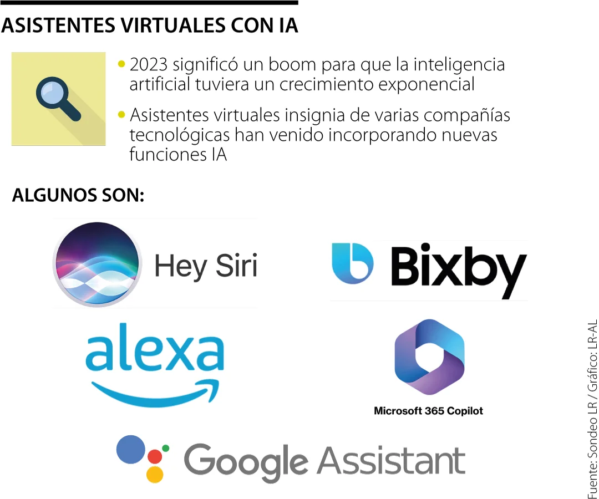

Aplicaciones de la Inteligencia Artificial
Asistentes Virtuales
Los asistentes virtuales, como Siri, Alexa o Google Assistant, utilizan IA para procesar y entender comandos de voz, permitiendo a los usuarios interactuar con dispositivos de manera natural.
Automóviles Autónomos
Los vehículos autónomos emplean IA para tomar decisiones en tiempo real, analizar el entorno y navegar sin la intervención de un conductor, lo que podría revolucionar la industria del transporte.
Medicina Personalizada
La IA se usa en medicina para analizar grandes volúmenes de datos, predecir diagnósticos y personalizar tratamientos basados en las características individuales de los pacientes.